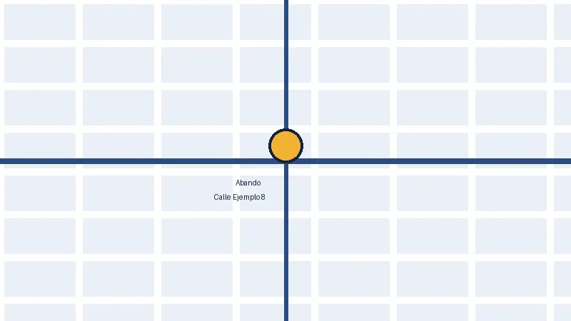

Autónomo
- Cuota
- 60 €/mes + IVA
- Incluye
- Trimestres, contabilidad y respuesta en menos de 24 horas
Asesoría para autónomos y pequeñas empresas en Bilbao. Cuota fija y un asesor que te contesta en menos de 24 horas.
Pedir consulta gratuita Ver precios
20 minutos de consulta. Sin compromiso. Te llamamos cuando tú quieras.
Para quién es
Ondo Asesores es una asesoría fiscal y contable en Abando, Bilbao. Trabaja con autónomos y pequeñas empresas que pierden muchas tardes con papeleo.
Lo cierto es que el papeleo se come tus tardes. Nosotros lo cogemos. Firmas y sigues con lo tuyo.
En Bilbao, Ondo Asesores se encarga de la fiscalidad y la contabilidad de autónomos y pequeñas empresas, con cuota fija y respuesta en menos de 24 horas.
Tus trimestres (tus declaraciones cada tres meses) presentados a tiempo. Recogemos tus facturas y te avisamos antes de cada vencimiento. No pagas de más.
Ten tu contabilidad al día sin tener que contratar a nadie. Cada mes cerramos tus números y te explicamos los resultados en palabras normales. Entenderás qué entra y qué sale.
Contrata sin miedo al papeleo. Te preparamos tus contratos y tus nóminas (lo que cobras tú y tu equipo, ya calculado) y lo presentamos por ti.
Trabajar con Ondo Asesores lleva tres pasos.
Sin citas eternas, sin documentos imposibles.
Rellena el formulario o llama al 600 000 000. Vemos tus números como están. No te pedimos nada raro.
Te contamos lo que pagas y lo que incluye. 60 € al mes si eres autónomo; desde 150 € si tienes empresa. IVA aparte, claro desde el día uno.
Llevamos tus cuentas y presentamos tus impuestos. Si nos escribes, te contestamos en menos de 24 horas.
Cuota fija para autónomos y pequeñas empresas en Bilbao. La conoces de antemano y no varía sin previo aviso.
Sin permanencia. Te quedas porque te va bien, no porque tengas un contrato. A la cuota indicada hay que sumarle el IVA.
Pide tu consulta gratuita de 20 min con Ondo Asesores, asesoría en Abando, Bilbao. Te respondemos en menos de 24 horas.
Calle Ejemplo 8, 48001 Bilbao
Lunes a viernes, de 9:00 a 18:00

Ver en Google Maps